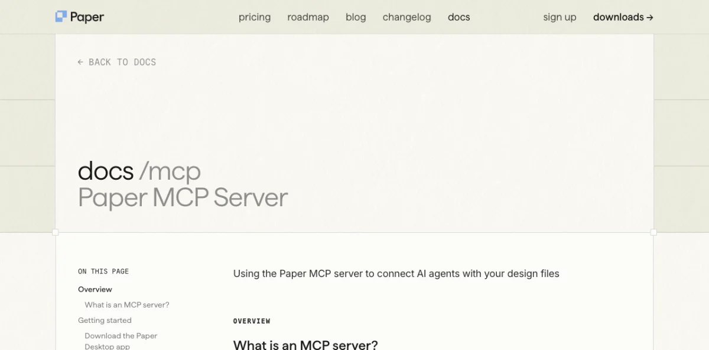
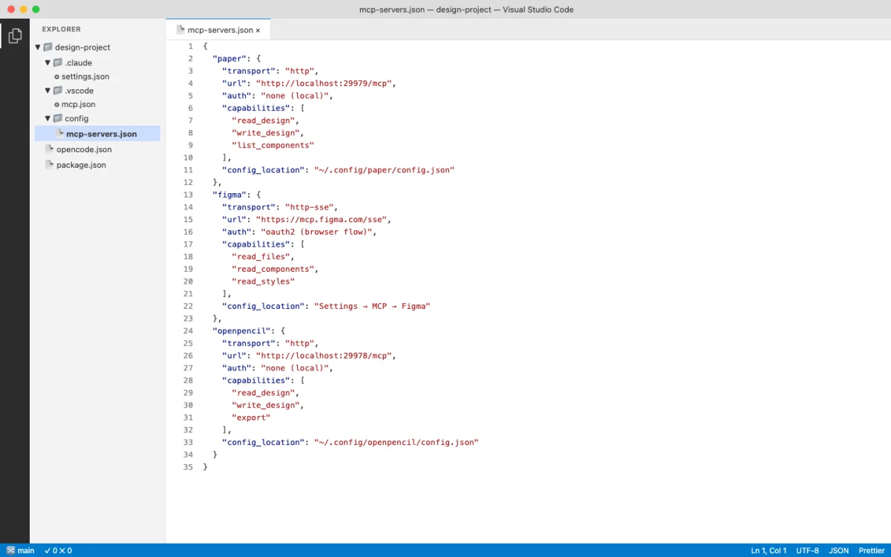

Note: Configuration snippets are illustrative examples. Refer to each tool's official documentation for current setup instructions.
Paper MCP Server Tools
Paper's MCP server runs locally when Paper Desktop is open. It listens on http://127.0.0.1:29979/mcp and exposes 22 tools split into read, write, and export categories. This is the most polished MCP server in the design tool ecosystem as of May 2026.


Read Tools
| Tool | Parameters | Returns | Notes |
|---|---|---|---|
get_basic_info |
--- | File name, page name, node count, artboard list | Overview of open file |
get_selection |
--- | Selected node IDs, names, types, size | Current selection context |
get_node_info |
nodeId | Size, visibility, lock, parent, children, text | Detailed node data |
get_children |
nodeId | Direct children: IDs, names, types | One level deep |
get_tree_summary |
nodeId, depth? | Compact text summary of subtree | Optional depth limit |
get_screenshot |
nodeId, scale? | Base64 image (1x or 2x) | Visual capture |
get_jsx |
nodeId, format | JSX string (tailwind or inline-styles) | Key tool for design-to-code |
get_computed_styles |
nodeIds[] | Computed CSS styles (batch) | Production-ready values |
get_fill_image |
nodeId | Base64 JPEG of image fill | Extract embedded images |
get_font_family_info |
fontFamily | Availability, weights, styles | Check font access |
get_guide |
topic | Guided workflow steps | e.g., "figma-import" |
Write Tools
| Tool | Parameters | Returns | Notes |
|---|---|---|---|
create_artboard |
name?, styles? | New artboard ID | Create new canvas area |
write_html |
html, mode, parentId? | Updated node IDs | Parse HTML, add or replace nodes |
set_text_content |
nodeIds[], content | Updated count | Batch text update |
rename_nodes |
nodeIds[], names | Updated count | Batch rename |
duplicate_nodes |
nodeIds[] | New IDs, descendant ID map | Deep clone |
move_nodes |
nodeIds[], parentId?, index? | Updated positions | Reparent and reorder |
update_styles |
nodeIds[], styles | Updated count | Batch CSS updates |
delete_nodes |
nodeIds[] | Deleted count | Cascade delete descendants |
finish_working_on_nodes |
artboardIds[] | --- | Clear working indicator |
Export Tool
| Tool | Parameters | Returns | Notes |
|---|---|---|---|
export |
nodes[], format?, scale? | Exported files | PNG, JPG, SVG, MP4; overrides like 2x, 512w, 1080p |
My take: The get_jsx and write_html tools make Paper's MCP server the tightest design-to-code loop available. No other tool lets an agent read JSX from a design and write HTML back in the same session. The Desktop app requirement is a real limitation for Linux users and CI environments, but for daily design work it's the server I reach for first.
Pencil MCP Server Tools
Pencil exposes design tools through its IDE extension and CLI. The MCP server provides access to .pen files, design variables, component definitions, and code generation.
| Capability | Details |
|---|---|
| File operations | Read and write .pen files |
| Design variables | Access variables and convert to CSS custom properties |
| Components | Read component definitions with slots and overrides |
| Code export | Generate React + Tailwind from .pen designs |
| Node manipulation | Insert, copy, update, replace, move, delete nodes |
| Visual capture | Screenshots and export to PNG, JPEG, WEBP, PDF |
| Search | Search nodes by pattern or ID |
| Variables and themes | Get and set design variables and themes |
Configure Pencil's MCP server in OpenCode:
// opencode.json
{
"mcp": {
"pencil": {
"type": "remote",
"url": "http://127.0.0.1:/mcp",
"enabled": true
}
}
} OpenPencil MCP Server Tools
OpenPencil's built-in MCP server ships as the pen-mcp package. It provides a layered design workflow and code generation pipeline.
Document and Design Tools
| Tool Category | Capabilities |
|---|---|
| Document operations | Read, create, modify .op files; multi-page support |
| Node manipulation | Insert, update, move, delete nodes |
| Style guides | get_style_guide_tags, get_style_guide for visual styles |
| Design workflow | design_skeleton, design_content, design_refine |
| Prompt retrieval | Segmented: load schema, layout, roles, icons, planning as needed |
Codegen Tools
// Codegen pipeline
codegen_plan → plan the code generation
codegen_submit_chunk → submit code chunks incrementally
codegen_assemble → assemble final output
codegen_clean → clean temporary filesInstall OpenPencil's MCP server from the OpenPencil UI: Settings > MCP > Install for [Agent]. One-click setup.
Warning: OpenPencil's codegen pipeline is incremental. If the agent crashes mid-generation, partial chunks may remain. Run codegen_clean to reset state before retrying.
Figma MCP Server Tools
Figma's official MCP server provides read-only access to design files. As of May 2026, write access is not available --- agents can read but cannot modify Figma files.
| Capability | Details |
|---|---|
| Read design files | Node tree, component definitions, styles |
| Selection context | Get current selection |
| Variables | Read variables (must have element selected that uses the variable) |
| Styles | Text styles, color variables, effect styles |
Known limitations: SVG fills returned as images, component instance color overrides not reliably returned, spacer elements ignored, and code-connected components not reliably converted.
Configure Figma's MCP server in Claude Desktop:
// Claude Desktop config
{
"mcpServers": {
"figma": {
"command": "npx",
"args": [
"-y",
"figma-developer-mcp",
"--figma-api-key=$FIGMA_API_KEY",
"--stdio"
]
}
}
}Security: Never commit API keys to version control. Use environment variables or a secrets manager.
Miro MCP Server Tools
Miro's MCP server enables AI-powered whiteboarding. It provides read and limited write access to Miro boards.
| Capability | Details |
|---|---|
| Read board content | Sticky notes, shapes, text, connectors |
| Write board elements | Create and modify board elements (limited) |
| Board metadata | Access board structure and metadata |
Miro uses OAuth-based authentication. Available through Miro's developer platform. Compatible with Claude Code and Cursor.
MagicPattern MCP Tools
MagicPattern generates design patterns --- dots, gradients, waves, blobs --- via MCP. Agents can create and customize patterns, then export them as SVG, PNG, or CSS backgrounds.
| Capability | Details |
|---|---|
| Pattern generation | Dots, gradients, waves, blobs, and more |
| Customization | Colors, spacing, density parameters |
| Export formats | SVG, PNG, CSS backgrounds |
API key-based authentication. Compatible with Claude Code. Free and paid tiers available.
My take: Paper's 22-tool MCP server is the gold standard. Every other server in this appendix is either read-only (Figma), limited-write (Miro), or single-purpose (MagicPattern). The design tools that win the agent era will be the ones that give agents full read-write access with well-documented tools. If you're evaluating a new design tool for agent workflows, MCP tool count and write access are the two metrics that matter most.
Configuration Reference by Agent Platform
The same MCP server needs different configuration in each agent. Here are the snippets for Paper's MCP server --- the pattern is the same for other servers, just change the URL.
Claude Code (plugin, recommended):
# Add marketplace
/plugin marketplace add paper-design/agent-plugins
# Install plugin
/plugin install paper-desktop@paperClaude Code (manual):
claude mcp add paper --transport http http://127.0.0.1:29979/mcp --scope userCodex CLI:
Settings > MCP Servers > Streamable HTTP
Name: paper
URL: http://127.0.0.1:29979/mcpOpenCode:
// opencode.json
{
"mcp": {
"paper": {
"type": "remote",
"url": "http://127.0.0.1:29979/mcp",
"enabled": true
}
}
}GitHub Copilot:
// .vscode/mcp.json
{
"servers": {
"paper": {
"type": "http",
"url": "http://127.0.0.1:29979/mcp"
}
}
}Cursor:
/add-plugin paper-desktop
# Or search "paper-desktop" in Cursor MarketplaceAntigravity:
// mcp_config.json
{
"mcpServers": {
"paper": {
"serverUrl": "http://127.0.0.1:29979/mcp"
}
}
}Claude Desktop (manual):
// Settings > Developer > Edit Config
{
"mcpServers": {
"paper": {
"command": "npx",
"args": ["mcp-remote", "http://127.0.0.1:29979/mcp"]
}
}
}Troubleshooting MCP Connections
MCP connections break. It is the most common source of friction in agent-driven design workflows. Here are the issues I see most often.
| Symptom | Cause | Fix |
|---|---|---|
| Agent cannot find MCP tools | Host tool not running or MCP not connected | Restart the agent session |
| MCP shows connected but tools fail | Stale connection after long session | Restart both the agent and the host tool |
| Agent hallucinates tool parameters | LLM context drift over long sessions | Restart the agent session |
| Rate limit errors after upgrade | Limits not reset after plan change | Update Paper Desktop (About > Check for updates) then restart |
| Cannot reach 127.0.0.1 on Windows WSL | WSL networking isolation | Enable mirrored mode networking in WSL config |